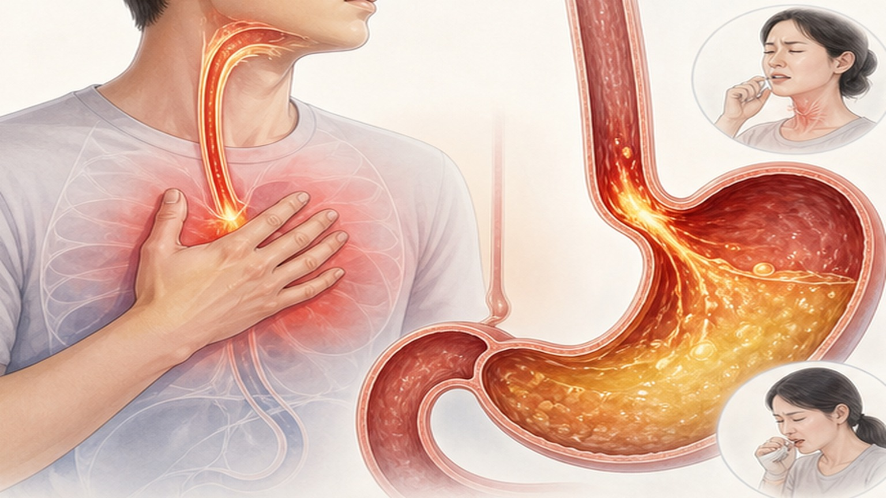

역류성 식도염(GERD) 생활습관 관리
약물치료와 함께 실천하는 교정
왜 가슴이 쓰리고 신물이 오르나요?
위와 식도 사이에는 하부식도괄약근이라는 조임쇠가 있어 위 내용물이 거꾸로 올라오지 않게 막아 줍니다.
이 조임쇠가 느슨해지거나, 배 안의 압력이 높아지거나, 위가 비워지는 속도가 느려지면 위산이 식도로 올라와
가슴쓰림·신물 오름이 생깁니다. 약은 위산을 줄여 증상을 가라앉히고,
생활습관 교정은 역류가 잘 일어나는 조건 자체를 줄입니다. 둘은 대신하는 관계가 아니라 함께 가는 관계입니다.
조임쇠 이완
하부식도괄약근
눕는 자세·과식·흡연이
조임쇠를 느슨하게 합니다
조임쇠를 느슨하게 합니다
복압 상승
복부 비만 · 꽉 끼는 옷
배 안 압력이 높아지면
위 내용물이 위로 밀립니다
위 내용물이 위로 밀립니다
위 배출 지연
기름진 음식 · 과식
위가 늦게 비워질수록
역류할 시간이 길어집니다
역류할 시간이 길어집니다
근거가 가장 확실한 두 가지 먼저 이것부터
| 무엇을 | 어떻게 | 왜 도움이 되나 |
|---|---|---|
| ① 체중 감량 | 과체중·복부비만이라면 체중을 줄이는 것이 가장 우선입니다. 무리한 단기 감량보다 꾸준히 줄여 유지하는 쪽이 낫습니다. | 복부 지방이 줄면 배 안 압력이 낮아져 역류 자체가 줄어듭니다. 생활습관 항목 중 가장 강하게 권고됩니다. |
| ② 취침 전 공복 | 잠들기 2~3시간 전부터는 먹지 않기. 야식·늦은 회식이 잦다면 이것부터 조정합니다. | 누운 자세에서는 중력의 도움이 없어 역류가 쉬워집니다. 위가 비워진 뒤 눕는 것만으로 야간 증상이 줄어듭니다. |
주의 — 생활습관 교정은 약을 대신하지 않습니다. 증상이 좋아졌다고 처방약을 임의로 끊거나
줄이지 마시고, 조정이 필요하면 진료 때 상의해 주세요.
밤에 증상이 있을 때
상체 전체를 높이기
침대 머리 쪽을 올리거나 경사형 쿠션으로 상체를 비스듬히
베개만 겹쳐 베기
목만 꺾이고 배가 눌려 오히려 역류가 늘 수 있습니다
식후 바로 눕지 않기
식사 후에는 상체를 세우고 가볍게 움직입니다
